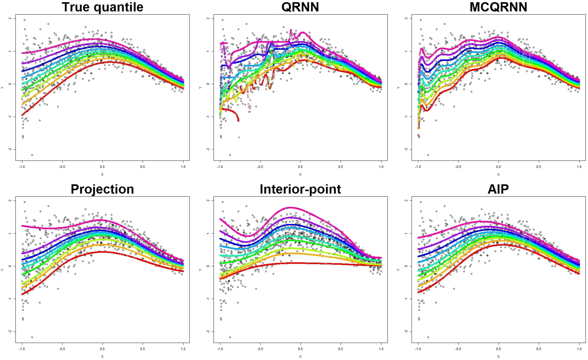
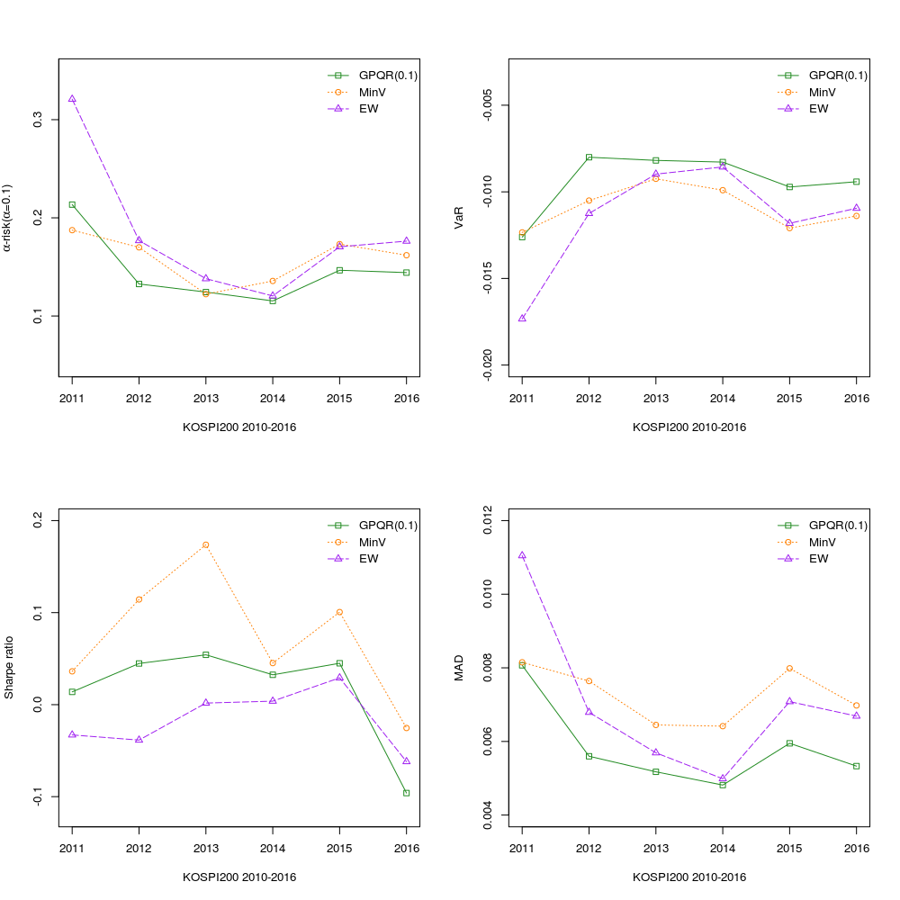
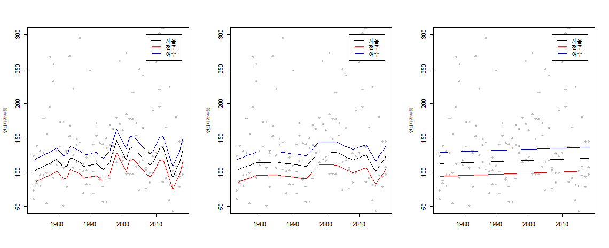

통계학회 발표했습니다!
연구실에서 수행해온 연구결과들을 2019년 추계 한국통계학회에서 발표했습니다. 발표자는 저와 박사과정 문상준, 석사과정 홍성철, 석사과정 한이정입니다. 문상준은 이번이 첫 번째 발표는 아니고, 홍성철, 한이정은 공개발표가 처음입니다. 지난 2017년 데이터정보과학회에서 발표를 해본 문상준은 떨기 않을 것으로 예상했으나 엄청 떨었던 것으로 보이구요, 의외로 한이정이 담담하고 차분한 발표를 했다는 인상을 주었습니다. 홍성철은 사람들이 많이 와서 발표에 적잖이 당황하였다고 합니다. 다음 발표에서는 더 좋은 모습을 기대합니다. 다음은 발표논문에 대한 내용입니다.
Continuum Babington-Smith model
이 연구는 순위모형의 연구결과 중 하나로 문상준 박사과정과 제가 함께 진행하였습니다. 본 연구는 지금까지 알려지 순위모형들을 확장하는 것을 목표로 하였습니다. 1950년대에 만들어진 Bradley-Terry-Mallows 순위모형과 그것보다 더 일반적인 순위모형인 Babington-Smith model을 연결하는 모형들을 만들어냈습니다. 연결 방법은 잘 알려진 정규화방법 중 하나인 Lasso를 이용하였습니다. 이 연구에서는 Babington-Smith model의 적절한 reparametrization 이 Bradley-Terry-Mallows 로 표현되는 것을 보이고 Sparse Two-Way ANOVA의 아이디어를 차용하여 추정모형을 유도하였습니다. 여기서 많은 계산량을 줄이기 위해 Monte-Carlo 샘플을 이용한 Constrastive divergence 알고리즘을 이용 근사목적함수를 최적화 하였으며, 미분불능함수를 쉽게 최적화하기 위해 ADMM을 도입하였습니다. 현재는 제안한 알고리즘의 부분적인 수렴성을 이론적으로 밝혔습니다. 발표자료는 다음 링크에 있습니다.
Learning multiple quantiles with neural network
이 연구는 해석가능한 신경망 모형의 연구 결과 중 하나로 문상준 박사과정, 저와 서울시립대학교 물리학과 이상훈 교수님, 서울대학교 통계학과 김용대 교수님이 함께 진행하였습니다. 본 연구에서는 추정된 조건부 분위수가 서로 꼬이는 문제(crossing problem)를 방지하는 신경망 모형을 제안하였습니다. (상위 10% 추정 분위수가 중위수 보다 아래쪽에 있는 모형은 쓰기갈 싫죠? 복잡한 모형에서는 이런 현상이 흔히 관찰된답니다 ㅜㅜ) 이를 방지하기 위해 선형회귀 모형에 사용된 부등제약조건을 신경망 모형의 학습에 적용하였습니다. 주로 신경망 모형은 일차 근사 최적화 방법을 하는데 여시거 신경망 모형의 계산에 문제가 발생합니다. 일반적인 선형 부등제약 조건을 만족시키는데 너무 많은 계산이 필요하죠. 우리는 일차근사 알고리즘만을 사용해 이를 해결하기 위해 수정된 내부점 방법 (interior point method)을 제안하였습니다. 알고리즘에서 목적함수에 제약조건을 항상 만족하는 보조 모수를 장벽 (barrier) 함수에서 도입하고 보조 모수와 원 모수의 차이를 정규화하였습니다. 이러한 방법을 통해 제안 알고리즘은 최적해와 가까운 해를 구함과 동시에 제약조건으로의 사영에 필요한 계산량을 효과적으로 개선할 수 있었습니다. 그리고 기존의 신경망을 이용한 다중 분위수 회귀 모형과 제안한 알고리즘의 예측 성능을 시뮬레이션과 실제 데이터에서 비교하였습니다.
 AIP가 제안한 방법입니다.
Grouped Portfolio Optimization with Pessimistic Risk Measure
이 연구는 포트폴리오 최적화 연구 결과 중 하나로 홍성철 석사과정, 고은영 석사과정, 저와 경기대학교 정보통계학과 최호식 교수님이 함께 진행하였습니다. 본 논문에서 Grouped는 포트폴리오를 선택하는데 그룹 제약조건이 있음을 뜻하는 것이고 Pessimistic Risk Measure는 기존의 분산 기반 위험이 아닌 다른 위험측도를 쓴다는 뜻입니다. 최근 포트폴리오 최적화 이론들은 기존의 Markowitz의 mean-variance 모델의 문제점(수익률의 분포가 정규분포를 따른다는 가정)을 지적하며 새로운 모형들을 제시해왔습니다. 그 중에 한 가지 모델로 비관적 포트폴리오 모델이 있습니다. 비관적 포트폴리오 모델은 이름처럼 부정적인 상황을 더욱 강조한 효용함수를 고려하고 그것로 정의된 위험하에서 포트폴리오를 최적화합니다. 여기서 말하는 부정적인 상황은 수익률을 하위 $\alpha$ 분위수까지만을 고려하는 것으로 이해할 수 있고 이와 연결되는 리스크 개념은 $\alpha$-risk로 정의됩니다. 따라서, 비관적 포트폴리오는 $\alpha$-risk를 최소화하는 포트폴리오 모델이고 $\alpha$-risk를 최소화하는 문제는 통계학에서 사용하는 분위수회귀모형의 해를 구하는 과정과 같다라는 사실을 이용해서 해결해왔습니다. 우리의 연구는 비관적 포트폴리오 모델을 머신러닝에서 사용하는 sparse group lasso regularization을 통해 투자기업과 군을 선택할 수 있는 모형으로 발전시켰습니다. 최적화 문제를 풀기 위해서는 ADMM 알고리즘을 사용했으며 시뮬레이션과 포트폴리오의 out-of-sample performance를 통해서 우리가 제안한 모형을 검증했습니다.
 우리가 제안하는 모델(GPQR(0.1)), minimum-variance 모델(MinV), equal-weighted 모델의 out-of-sample performance를 비교해보았습니다. 평가지표로는 $\alpha$-risk(0.1) at the level of 10%, VaR(0.1)(value at risk at the level of 10%), Sharpe ratio, MAD(mean absolute deviance)입니다. 우리가 제안한 모형이 극단적인 risk인, $\alpha$-risk와 VaR에서는 가장 좋은 성능을 보였고, Sharpe ratio에서는 minimum-variance가 가장 좋은 성능을 보였습니다. 두가지 모형 다 각자가 기반하는 리스크에서 가장 뛰어난 성능을 보이는 것이 확인되었습니다.
Application of regularization method to the nonstationary GEV distribution
이 연구는 수자원 공학에 머신러닝의 응용연구 중 하나로 한이정 석사과정, 조연선 석사과정, 제가 함께 진행하였습니다. 최근 극한 강수량을 다루는 연구 문제는 크게 두 가지로 이루어지고 있습니다. 첫째는 시간에 따른 비정상성에 대한 분석이고 둘째는 지역에 대한 공간구조의 분석입니다. 본 논문에서는 극단값 모형의 시간 및 공간에 대한 효과를 설명하기 위해 모형의 복잡도를 조절하는 벌점화 방법을 적용하였습니다. 우선 비정상 극치 자료에 대해 트렌드필터링을 적용하여 시간에 따른 모수의 변화를 추정하였습니다.또한 공간 종속성을 반영하기 위해 관측 지점의 지리 정보 (위도, 경도 등)를 공변량으로 하는 thin-plates splines 회귀모형을 적용하였습니다. 마지막으로 시간과 공간성분을 동시에 모형화하기 위해 두 벌점화 방법을 모두 통합한 시공간모형을 제안합니다. 제안한 모형을 우리나라 56개 지점의 지상 관측소에서 관측된 연 최대 강수량 (1972년~2018년)에 대해 적용하였으며, 연 최대 강수량 평균의 시간에 따른 추세를 여러 지역에 대해 확인하였습니다.
 연최대일강수량에 대한 여러가지 적합결과입니다. 이 중에서 적절한 추정모형을 골라야 합니다.